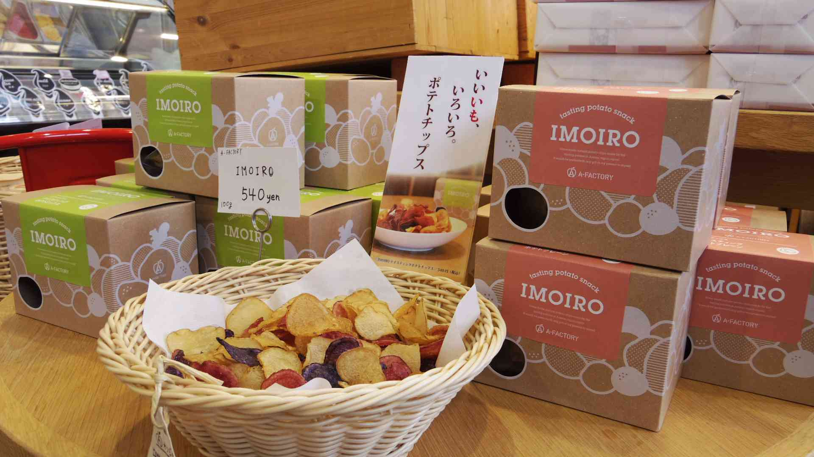
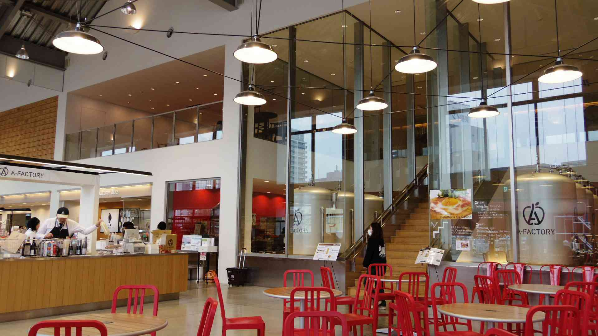
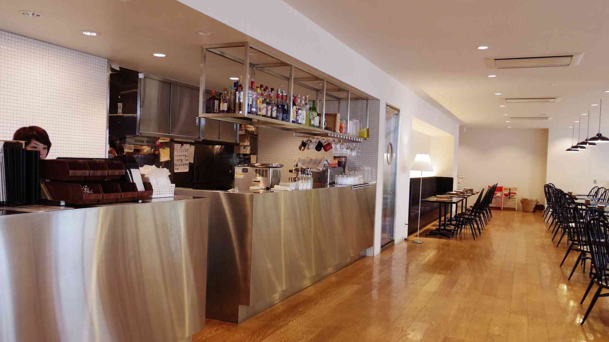
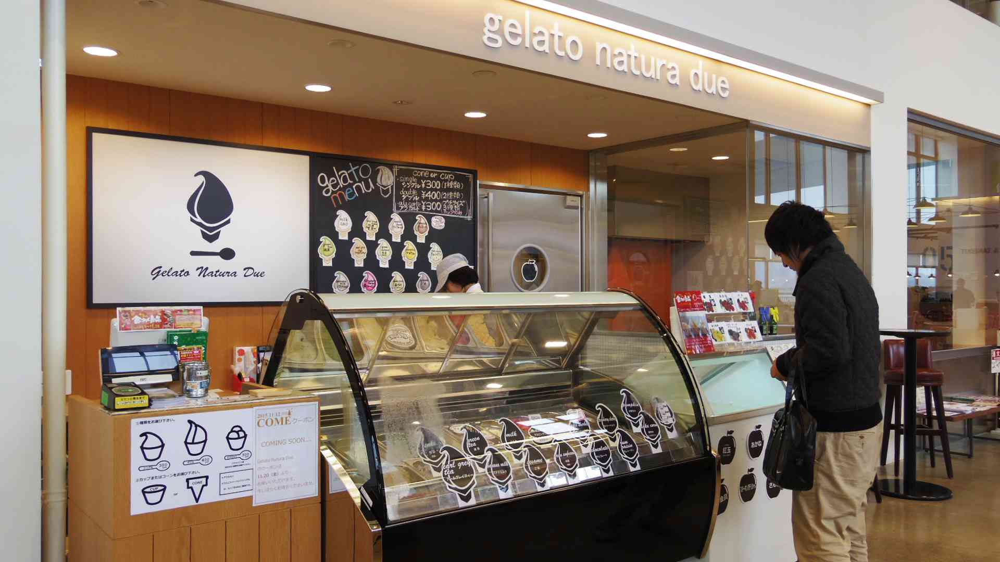
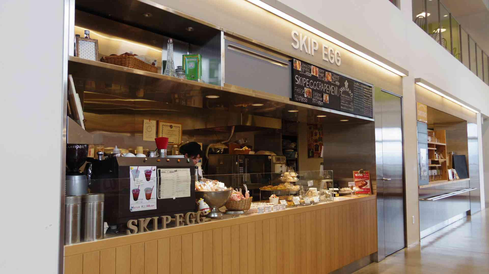
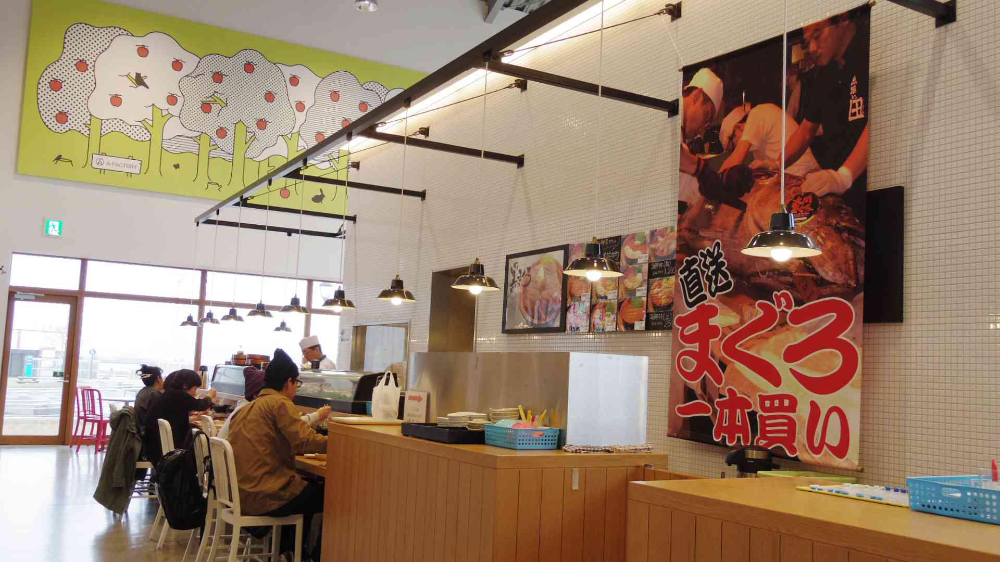
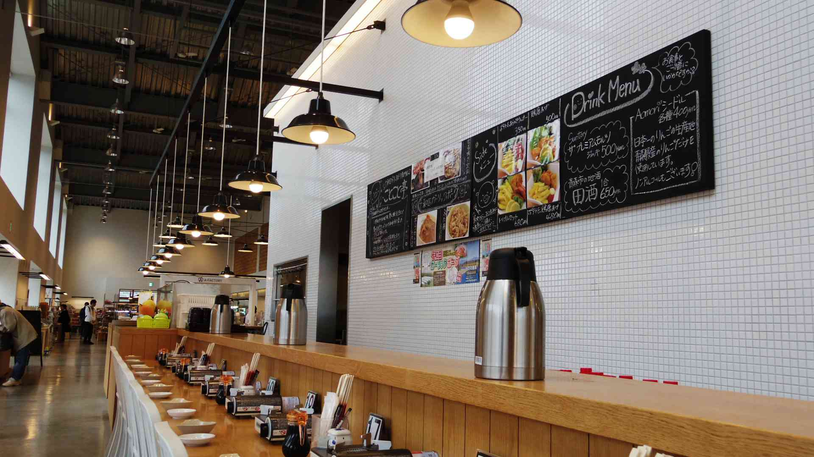

今回、A-FACTORYさんから店内の撮影許可をいただきました。
というわけで、こちらの特設ページで通常のページでは紹介しきれなかったところをご紹介します。
あまり利用したことない方や興味のある方、必見です！

まず正面玄関から入るとお土産コーナーがあります。
こちらの写真は『テイスティングポテトチップスIMOIRO（イモイロ）』という商品。
使っているイモの品種そのものの色だから見た目が違うだけでなく、味わいも違うそうです。
この他にも青森県産りんごで作ったお酒『アオモリシードル』や青森県の田子産のにんにくをコーラにした『タッコーラ』
ミニチュアダンボールに入った『青森りんごあめ・チョコレート』など、数多く取り扱っています。

ちなみに、こちらの写真のガラス張りの奥にある工房。ここで『アオモリシードル』が作られています！

ここからは館内にある飲食店の紹介をしていきたいと思います。
こちらの写真は2Fにある『Galetteria Da Sasino（ガレッテリア ダ・サスィーノ）』というお店。
青森県産のそば粉を使用しており、その他にも青森県産食材にこだわった料理を提供しています。

こちらの写真は『Gelato natura due（ジェラート ナトゥーラ・ドゥーエ）』というお店。
食の安心・安全がモットー。香料、着色料を使用せず地元で古くから愛されてる『あおい森の牛乳』を使用している。

こちらの写真は『SKIP EGG（スキップエッグ）』というお店。
トキワ養鶏の新鮮な卵を贅沢に使った美味しいスイーツを堪能することができます。
『こめたまバウム』はこのお店でしか食べる事の出来ない名品なので是非！

こちらの写真は『黒まぐろ』というお店。
青森近海の本マグロや陸奥湾産のホタテ、八戸産のイカなど新鮮で上質な海の幸を食べることができる。

こちらの写真は『ことこと亭』というお店。
八甲田や十和田湖など豊かな自然たっぷりの十和田市で育った青森県産ブランド豚『十和田ガーリックポーク』を堪能することができます。
A-FACTORYの場所はこちらです。